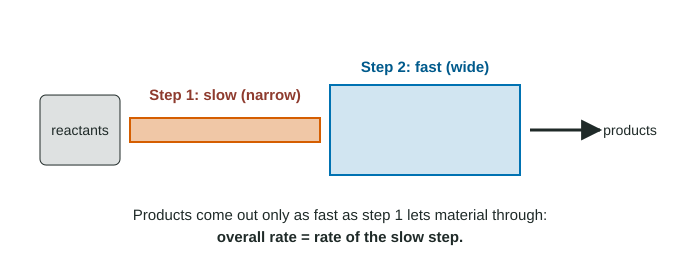

Reaction Mechanism and Rate Law
The slowest step of a mechanism is the rate-determining step.
Part 1 · Hook
Why this matters
Part 2 · Before you start
What this builds on
Part 3 · Prerequisite check
Quick check before you start
1. In the mechanism (1) A + B → C; (2) C + D → E, what is C?
- An intermediate
- A reactant
- A product
- A transition state
Show the answer
C is made in step 1 and used in step 2.
- Correct: An intermediate:
- A reactant:
- A product:
- A transition state:
2. What is the rate law of the elementary step 2 X + Y → Z?
- rate = k[X]²[Y]
- rate = k[X][Y]
- rate = k[Z]
- It must be measured
Show the answer
An elementary step's coefficients are its orders.
- Correct: rate = k[X]²[Y]:
- rate = k[X][Y]:
- rate = k[Z]:
- It must be measured:
Part 4 · See it
See it first

Part 5 · Step by step
How it works, step by step
- Each later step needs a product of the step before itthe reaction cannot run faster than its slowest step
- When the first step is the slow onethe overall rate law is that step's rate law, written from its coefficients
- Reactants used only in later fast steps do not change the ratethey do not appear in the rate law (zero order)
- The predicted rate law is compared with the measured onea mismatch rules a mechanism out; a match makes it consistent with the data
Part 6 · Key ideas
Key ideas
- The rate-determining step is the slowest step; the overall rate cannot be faster than it.
- If the first step is slow, the overall rate law is the rate law of that step.
- Reactants that enter only after the slow step do not appear in the rate law.
- A mechanism is consistent with data if its predicted rate law matches the measured one. It is never proven.
Part 7 · Misconception
A common mistake
The wrong idea: The rate law can be written from the overall equation's coefficients.
What actually happens: Only an elementary step can be read that way. Write the rate law from the slow step of the mechanism and check it against the data.
Part 8 · Check yourself
Check yourself
Exam-style questions. Anything you miss goes into your review queue.
Data table
Rate data and two proposed mechanisms
For NO₂(g) + CO(g) → NO(g) + CO₂(g) at a fixed temperature, a student measures initial rates:
Mechanism 1 (one step): NO₂ + CO → NO + CO₂
Mechanism 2: step 1 (slow): NO₂ + NO₂ → NO₃ + NO; step 2 (fast): NO₃ + CO → NO₂ + CO₂
| Trial | [NO₂] (M) | [CO] (M) | Initial rate (M/s) |
|---|---|---|---|
| 1 | 0.10 | 0.10 | 0.0050 |
| 2 | 0.20 | 0.10 | 0.0200 |
| 3 | 0.10 | 0.20 | 0.0050 |
1. What is the experimental rate law?
- rate = k[NO₂]²
- rate = k[NO₂][CO]
- rate = k[NO₂]
- rate = k[NO₂]²[CO]
Show the answer
Trials 1 → 2: [NO₂] doubles, rate × 4, so second order in NO₂. Trials 1 → 3: [CO] doubles, rate unchanged, so zero order in CO. rate = k[NO₂]².
- Correct: rate = k[NO₂]²: Right: second order in NO₂, zero order in CO.
- rate = k[NO₂][CO]: Doubling [CO] does not change the rate, so CO is not in the rate law.
- rate = k[NO₂]: Doubling [NO₂] quadruples the rate, which is second order, not first.
- rate = k[NO₂]²[CO]: CO is zero order, so it does not appear.
2. Which mechanism is consistent with the data, and why?
- Mechanism 2: its slow step gives k[NO₂]²
- Mechanism 1: it is the same as the overall equation
- Mechanism 1: a one-step path is simpler than two
- Both: they each add up to the overall equation
Show the answer
Mechanism 1 is a single elementary step, so it predicts rate = k[NO₂][CO], which does not match. In mechanism 2 the slow first step sets the rate: rate = k[NO₂]², which matches the data.
- Correct: Mechanism 2: its slow step gives k[NO₂]²: Right: its predicted rate law matches the measured one.
- Mechanism 1: it is the same as the overall equation: Summing to the overall equation is necessary, but its predicted rate law k[NO₂][CO] does not match the data.
- Mechanism 1: a one-step path is simpler than two: Simplicity is not evidence; the predicted rate law must match.
- Both: they each add up to the overall equation: Both pass the sum test, but only one predicts the measured rate law.
3. In mechanism 2, why does [CO] not appear in the rate law?
- CO reacts in the fast step, after the slow one
- CO is an intermediate that cancels out
- CO is a product of the slow step
- CO is present in a large excess in the trials
Show the answer
The overall rate is set by the slow step, NO₂ + NO₂ → NO₃ + NO. CO is used only in step 2, which waits on NO₃ from step 1, so speeding up step 2 by adding CO cannot speed up the overall reaction.
- Correct: CO reacts in the fast step, after the slow one: Right: CO enters after the bottleneck.
- CO is an intermediate that cancels out: CO is a reactant in the overall equation, not an intermediate.
- CO is a product of the slow step: The slow step makes NO₃ and NO, not CO.
- CO is present in a large excess in the trials: The trials change [CO]; it is not held in excess.
Model
A two-step mechanism for making NOBr
One proposed mechanism for 2 NO(g) + Br₂(g) → 2 NOBr(g):
- NO + Br₂ → NOBr₂ (slow)
- NOBr₂ + NO → 2 NOBr (fast)
4. What rate law does this mechanism predict?
- rate = k[NO][Br₂]
- rate = k[NO]²[Br₂]
- rate = k[NOBr₂][NO]
- rate = k[NO]²
Show the answer
The first step is slow, so it is the rate-determining step. Its rate law, written from its coefficients, is the overall rate law: rate = k[NO][Br₂].
- Correct: rate = k[NO][Br₂]: Right: the slow first step sets the rate.
- rate = k[NO]²[Br₂]: That is the rate law from the overall equation, which is not an elementary step.
- rate = k[NOBr₂][NO]: That is the rate law of the fast step, and it includes an intermediate.
- rate = k[NO]²: Br₂ is a reactant in the slow step, so it must appear.
5. Experiments show rate = k[NO]²[Br₂]. What does this tell you about the mechanism above?
- It is not consistent with the data
- It is consistent, since it sums to the overall equation
- It is consistent, since it has a slow step
- The data are wrong, since they match the overall coefficients
Show the answer
The mechanism predicts rate = k[NO][Br₂], first order in NO. The measured order in NO is 2, so the mechanism does not account for the data.
- Correct: It is not consistent with the data: Right: predicted and measured rate laws disagree.
- It is consistent, since it sums to the overall equation: Summing correctly is needed but not enough.
- It is consistent, since it has a slow step: Having a slow step is not enough; its rate law must match the data.
- The data are wrong, since they match the overall coefficients: A measured rate law can match the coefficients by chance; the data are the evidence.
6. In a mechanism, step 1 is slow and step 2 is fast. A chemist finds a way to make step 2 twice as fast. What happens to the overall rate?
- It halves
- It stays about the same
- It doubles
- It becomes four times as fast
Show the answer
Step 2 already uses its intermediate as fast as step 1 supplies it. The slow first step still limits the overall rate, so it barely changes.
- It halves: Making a step faster cannot slow the reaction down.
- Correct: It stays about the same: Right: the bottleneck is unchanged.
- It doubles: Only speeding up the slow step would raise the overall rate.
- It becomes four times as fast: Nothing about step 2 controls the overall rate here.
Part 9 · Summary
Summary
Part 10 · Up next
What comes next
Part 11 · Connections